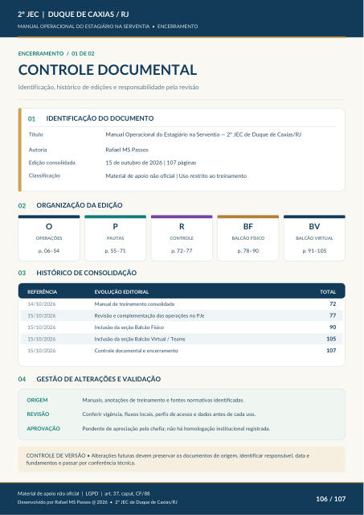

ENCERRAMENTO / 01 DE 02
CONTROLE DOCUMENTAL
Identificação, histórico de edições e responsabilidade pela revisão
IDENTIFICAÇÃO DO DOCUMENTO
Título Autoria Rafael MS Passos Edição consolidada 15 de outubro de 2026 | 107 páginas Classificação
ORGANIZAÇÃO DA EDIÇÃO
O
OPERAÇÕES
p. 06–54 P
PAUTAS
p. 55–71 R
CONTROLE
p. 72–77 BF
BALCÃO FÍSICO
p. 78–90 BV
BALCÃO VIRTUAL
p. 91–105
HISTÓRICO DE CONSOLIDAÇÃO
REFERÊNCIA
EVOLUÇÃO EDITORIAL
TOTAL
14/10/2026 Manual de treinamento consolidado
15/10/2026
Revisão e complementação das operações no PJe
15/10/2026
Inclusão da seção Balcão Físico
15/10/2026
Inclusão da seção Balcão Virtual / Teams 105 15/10/2026 Controle documental e encerramento 107
GESTÃO DE ALTERAÇÕES E VALIDAÇÃO
ORIGEM Manuais, anotações de treinamento e fontes normativas identificadas.
REVISÃO
Conferir vigência, fluxos locais, perfis de acesso e dados antes de cada uso.
APROVAÇÃO
Pendente de apreciação pela chefia; não há homologação institucional registrada. CONTROLE DE VERSÃO • Alterações futuras devem preservar os documentos de origem, identificar responsável, data e fundamentos e passar por conferência técnica.
Ver também o infográfico original (página 106)
